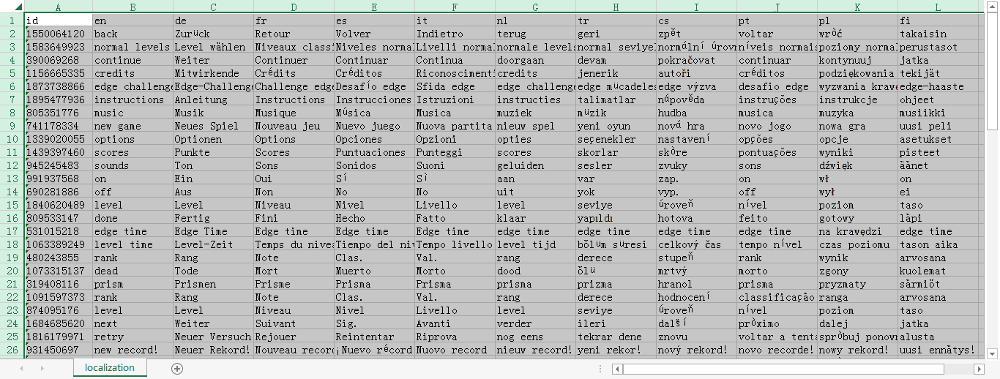

EDGE 文件格式
以下是游戏使用的几种文件格式。
.bin 关卡
在游戏的 levels 目录下除 mapping.xml 以外就是一大堆一大堆的 .bin 文件。这些文件存放着关卡的核心信息。该游戏的所有版本都使用这种 .bin 文件，且差异很小，基本可以相互移植。
该文件描述了这种 .bin 文件的格式：https://github.com/Mygod/Edge/blob/master/EdgeTool/Core/EdgeBin.h
显然手动修改这种 .bin 文件的工作量和复杂度就像地狱一样！因此推荐你通过使用 EdgeTool 反编译、编译这种文件来修改/制作这种文件。
坐标系
.bin 关卡文件的坐标系与游戏中其他部分截然不同。
关卡文件中使用的三维坐标系中 X 轴与其他坐标系相同，都是正方向为右（东）。
Y 轴的正方向为后（南）。
Z 轴的正方向为上。
反编译
反编译一个 .bin 文件，你通常会得到三种文件：
- 一个 .xml 文件，这是关卡文件的核心所在，存放了一切机关之类的东西。其根元素为 Level 元素。
- 一个 .png 文件（可能没有，这时表示里面啥东西也没有），这是旧版小地图，暂时无法断定它的真正用途。它的宽度是 (关卡宽度 + 关卡长度) / 10 向上取整，高度是 (关卡宽度 + 关卡长度 + 2 x 关卡高度) / 10 向上取整，如果文件不存在或大小不正确，其内容将被当作全空处理。
- 一堆 .{z}.png 文件，具体见下面的《关卡地图》。
Level 元素
说明：EDGE 关卡 XML 的根元素，表示一个关卡。
属性列表：
| 属性名 | 数据类型 | 备注 |
|---|---|---|
| ID | 32位整数 | 必填。关卡的标识符。若相同ID的关卡同时安装在游戏中，则只会显示前一个。为了避免冲突，请至少使用五位数作为关卡 ID，并使用一个随机生成的前缀。 |
| Name | 文本 | 必填。关卡名。 |
| TimeThresholds | 16位自然数列表 | 必填。由 5 个数字组成，分别表示达到 S+、S、A、B、C 所需的秒数，请注意这里手机版比较特殊。达到 S+、S、A、B、C 所需的时间必须严格递增，否则将无法获得部分评级。 |
| Size | 三维大小 | 必填。填写关卡大小。 |
| SpawnPoint | 三维坐标 | 必填。方块起始坐标。 |
| ExitPoint | 三维坐标 | 必填。终点坐标。如果 X 坐标 ∉ [0,宽度) 或 Y 坐标 ∉ [0,长度) 或 Z 坐标 ∉ (0,高度] 会导致游戏崩溃。 |
| Theme | 8位自然数 | 可选，默认为0。指定关卡内部方块的外观主题。如果大于3则会在游戏中变成0。0为白色主题，1为浅灰色主题，2为深灰色主题，3为黑色主题。只有白色主题的背景会有一闪一闪的星星。（可以通过 models 添加不会闪烁的星星）请注意设置主题并不影响那些在 models 中的静态方块的外观。如果想要修改请使用 GenerateModel 元素。 |
| MusicJava | 8位自然数 | 可选，默认为0。在Java版上播放音乐的索引。如果大于11则会在游戏中变为0。音乐列表（前面的数字为代号）：00_menus, 01_braintonik, 02_cube_dance, 03_essai_2, 04_essai_01, 05_test, 06_mysterycube, 07_03_EDGE, 08_jungle, 09_RetardTonic, 10_oldschool_simon, 11_planant |
| Music | 8位自然数 | 可选，默认为6。在其他版本上播放音乐的索引。如果大于24则会在游戏中变为6。音乐列表（前面的数字为代号）：00_Title, 01_Eternity, 02_Quiet, 03_Pad, 04_Jingle, 05_Tec, 06_Kakkoi, 07_Dark, 08_Squadron, 09_8bits, 10_Pixel, 11_Jupiter, 12_Shame, 13_Debrief, 14_Space, 15_Voyage_geometrique, 16_Mzone, 17_R2, 18_Mystery_cube, 19_Duty, 20_PerfectCell, 21_fun, 22_lol, 23_lostway, 24_wall_street |
| Zoom | 16位整数 | 可选，默认为-1。关卡开始时的缩放级别，在这里填写小于1或任何大于5（而不是6）的整数的效果都和填写1相同。其余功能与 CameraTrigger 元素中的对应属性相同。 |
| Angle | 16位整数 | 可选。表示在关卡开始时高级缩放模式下的相机的观察角度。具体功能与 CameraTrigger 元素中的对应属性相同。 |
| FieldOfView | 16位整数 | 可选，默认为0。指定触发后的视野大小。具体功能与 CameraTrigger 元素中的对应属性相同。 |
| ModelTheme | 8位自然数 | 可选，默认与 @Theme 相同。指定生成模型使用的默认主题与背景所使用的主题。设置为 3 以上可以禁用生成模型。 |
<Level ID="309" Name="1st contact" TimeThresholds="9,25,55,85,145"
Size="14x26x4" SpawnPoint="3,22,62" ExitPoint="11,12,1" MusicJava="5"
Music="6" Zoom="1">
...
</Level>子元素列表：
MovingPlatform
Bumper
FallingPlatform
Checkpoint
CameraTrigger
Prism
Fan（已过时）
Button
ButtonSequence
OtherCube
DarkCube
ResizerGrow & ResizerShrink
MiniBlock（已过时）
MovingPlatform 元素

说明：MovingPlatform（移动方块），表示一个会移动的方块，其颜色由/Level/@Theme指定。请注意移动方块顶部的颜色永远都是浅色，而不是像模型中的静态方块那样深浅相间。
属性列表：
| 属性名 | 数据类型 | 备注 |
|---|---|---|
| ID | ID | 可选。填写后可用于被引用。 |
| AutoStart | 布尔型 | 可选，默认为True。指定在关卡开始时是否该方块是否需要移动。 |
| LoopStartIndex | 8位自然数 | 可选，默认为1。指定当移动方块移动到最后一个路点后的下一个路点的索引（从1开始）。将该值设置为0可以使移动方块在移动到最后一个路点后停止移动。若索引大于路点数量很可能会导致一些BUG。 |
| Clones | 16位整数 | 可选，默认为-1。已过时。 |
| FullBlock | 布尔型 | 可选，默认为True。指定该移动方块是完整的一个方块还是只有上半个。（请注意这只是外观上不同，在游戏物理引擎中两者并无差别） |
| RelatedTo | ID | 可选。语法糖。指定后该移动方块会与目标移动方块保持相对静止，而其 Waypoint 子元素将会被加到目标移动方块移动序列之后。 |
| Offset | 三维坐标 | 可选。语法糖。仅在指定 @RelatedTo 后此项才有效。指定与目标移动方块的偏移量。 |
<MovingPlatform ID="Block19" AutoStart="False" LoopStartIndex="0"> ... </MovingPlatform>
子元素列表：
Waypoint
Waypoint 元素
说明：Waypoint（路点），表示移动方块到达的一个点。
属性列表：
| 属性名 | 数据类型 | 备注 |
|---|---|---|
| Position | 三维坐标 | 必填。该点的坐标。请注意这里的Z坐标应该在原坐标基础上-1，否则在游戏中将显示不正常！ |
| TravelTime | 16位自然数 | 可选，默认为0。移动到该点需要使用的帧（1/22秒）数。请注意如果该值过大可能会导致走到一半弹回来的 BUG！如果遇到这样的 BUG，如果可能请把一个路点拆成两个或多个。 |
| PauseTime | 16位自然数 | 可选，默认为0。在该点停留的帧（1/22秒）数。 |
<Waypoint Position="-1,-81,4" PauseTime="24" />
Bumper 元素

说明：Bumper（撞击器），表示一个支持撞击的方块。请注意撞击器顶部的颜色永远都是浅色，而不是像模型中的静态方块那样深浅相间。
属性列表：
| 属性名 | 数据类型 | 备注 |
|---|---|---|
| ID | ID | 可选。填写后可用于被@AffectBumpers引用。 |
| Enabled | 布尔型 | 可选，默认为True。指定撞击器在关卡开始时是否被启用。 |
| Position | 三维坐标 | 必填。指定撞击器的位置。 |
<Bumper Position="11,4,0"> ... </Bumper>
子元素列表：
North & East & South & West 元素 各 0～1 个
FallingPlatform 元素
说明：FallingPlatform（可掉落平台），表示一个受到方块压过后在一段时间后就会消失的方块，其外观为一块会掉落的瓷砖。请注意：
- 可掉落平台有腐蚀一切静态方块包括终点在内（除 Bumper 外）的功能！
- 当可掉落平台的 Z 坐标 ∈ (0,高度] 且 (X 坐标 ∈ [0,宽度] 且 Y 坐标 = 长度 或 X 坐标 = 宽度 且 Y 坐标 ∈ [0,长度]) 时可掉落平台虽然可见但是可以被玩家方块穿透。
- 当玩家方块站在一块 Z 坐标 ≤ 0 的可掉落平台上时将无法向上翻滚/EDGE！
属性列表：
| 属性名 | 数据类型 | 备注 |
|---|---|---|
| Position | 三维坐标 | 必填。指定可掉落平台的坐标。 |
| FloatTime | 16位自然数 | 可选，默认为20。表示压过到掉落之间间隔的帧（1/22秒）数。 |
<FallingPlatform Position="14,3,1" FloatTime="10" />
Checkpoint 元素
说明：Checkpoint（存档点），若在方块经过这一点（或这一范围）后死亡（或在菜单中选择 last checkpoint），会恢复到这一点，并恢复到达这一点时的状态。
属性列表：
| 属性名 | 数据类型 | 备注 |
|---|---|---|
| Position | 三维坐标 | 必填。指定存档点的坐标。 |
| RespawnZ | 16位整数 | 可选，默认为0。指定恢复时方块的Z坐标。 |
| Radius | 二维向量 | 可选，默认为0,0。使方块的坐标与存档点坐标之差的绝对值小于此值时也认为是到达了存档点。（换言之可以使存档点变成一个矩形） |
<Checkpoint Position="6,22,1" RespawnZ="1" Radius="0,1" />
注意：
- 在关卡中一旦排在后面的 Checkpoint 被激活后，在这个 Checkpoint 及之前的所有 Checkpoint 将不能被激活，因此顺序是非常重要的；
- Checkpoint 只有玩家方块停在该位置或从其他位置翻到这一位置（如 arksecktor 一关所示）才会被激活，在空中降落时无法激活任何 Checkpoint。
CameraTrigger 元素
说明：CameraTrigger（相机触发器），会在到达这一点（或这一范围）时改变缩放级别。
属性列表：
| 属性名 | 数据类型 | 备注 |
|---|---|---|
| Position | 三维坐标 | 必填。指定相机触发点的坐标。 |
| Radius | 二维向量 | 可选，默认为0,0。使方块的坐标与相机触发器坐标之差的绝对值小于此值时也认为是触发了相机触发器。（换言之可以使相机触发点变成一个矩形） |
| Zoom | 16位整数 | 可选，默认为-1。指定触发后的缩放级别，即相机离方块的距离，从近到远分别是6、5、1、2、3、4。填写为负数或不填写表示启动高级相机模式。请注意启动高级相机模式后必须填写@Duration，否则无效！填写其他值同样无效。 |
| Angle | 16位整数 | 可选。指定触发后相机的观察角度。22 为默认观察角度，大于等于 0 时使用透视投影，且该值越大观察角度越低，大于 184 时的效果与等于 184 相同；小于 0 时使用平行投影，其数值无实际效果。请注意 @Angle 在正负交换时会闪一下。填写后 @FieldOfView 无效。 |
| FieldOfView | 16位整数 | 可选，默认为 22。指定触发后的视野大小。大于 184 时的效果与等于 184 相同；小于 0 时视角会变得极小，只能看到方块，其数值无实际效果。 |
| StartDelay | 16位自然数 | 可选，默认为0。指定触发到开始移动相机之间间隔的帧（1/22 秒）数。仅在高级相机模式下可用。 |
| Duration | 16位自然数 | 可选，默认为0。指定相机从当前状态转换到目标状态所花费的帧（1/22 秒）数。仅在高级相机模式下可用。 |
| SingleUse | 布尔型 | 可选，默认为 False。指定是否只能触发一次。仅在高级相机模式下可用。 |
<CameraTrigger Position="4,9,1" Radius="1,2" Zoom="1" />
请注意：
- 在 @Zoom, @Angle, @FieldOfView 三个属性中只能填写一个，在两个及以上被填写有效值的情况下，只有排在最前面的会生效。若三个都不填写则表示重置 @Angle 和 @FieldOfView 到默认值 22。
- @FieldOfView 与 @Angle 在任何情况下都不能并存。如在设置 @FieldOfView 时 @Angle 会被回到 22。反之亦然。
高级相机模式
高级相机模式是 Two Tribes 添加的功能，之所以称之为高级是因为 mobigame 的 EDGE 是 2.5D，其中并没有也很难有这样的实现。实际上在真正的三维绘图中高级相机模式中的一些概念都是很常见的。
注意：高级相机模式的动画即使在暂停时也会继续播放！
效果演示
透视投影

透视投影的原理类似于小孔成像（区别在于物和像在孔的同一侧），由于它和眼球的成像（凸透镜成像）效果类似，符合远大近小的规律，因此使用透视投影可以更好地模拟出真实的 3D 世界在眼球中的影像。
简单来说透视投影原理就是：在相机前方选择一个平面使其与观测方向垂直，则在 3D 世界中的任意一点在该平面上的投影点为该点与视点的连线与平面的交点。如下图所示。
接下来我们谈谈视野（Field of View，常简写为 FoV）大小，视野大小是透视投影特有的。上面我们提到的平面大小是无限的，而人眼观察到的图像大小是有限的，同样地游戏的屏幕大小也是有限的，因此我们能看到的部分与视点连线的夹角大小就称为视野大小，如下图所示。通常情况下视野大小的单位为°或弧度，可惜我们并不知道它在 EDGE 中的单位。
视野（Field of View）与缩放级别（Zoom Level）都是数字越小看得越少，数字越大看得越多但是区别在于缩放级别指的是相机与被观察物体之间的距离，而且小地图的大小会随之改变；而视野则是相机可观察到的角度范围大小，而且小地图的大小不会随之改变。由于人眼的视野有限，如果视野过大就会显得不自然。在上面的视频中你会注意到当 @FieldOfView=180 时远处（或者说四周）的物体看起来不太自然。
最后我们再谈谈观察角度，如下图所示（图中的 @Angle=0 应改为 @Angle=22 ），当 @Angle=22 时观察角度与地面的夹角为 45°，@Angle 增大时夹角减小。同样我们并不知道这里的单位是什么。
平行投影
平行投影与太阳光（由于太阳距离很远可近似看成是平行光）投在若干个 3D 物体上在一个平面（如地面）上留下的影子的效果更加接近。平行投影中由于没有视点，也就没有视野大小的概念。不过应该可以通过调整裁剪的平面大小来达到与视野类似的效果，平行投影的观察角度可以靠平面的倾斜角度和投影方向调整，不过反正游戏中也没给你这功能，就不研究了。
在太阳光下飞机在空中打在地面上的影子大小和停在地面上的影子大小差别不大，在平行投影中也是这样，不再是远大近小。东西不论远近，大的投影出来就是大的，小的投影出来就是小的。P.S. 由于在 PC 版的游戏中平行投影效果并不好，我个人猜测 Two Tribes 仿照了太阳光的原理，把相机距离拉得很远，而把视野大小弄得极小来达到平行投影的效果。
此外你可以注意到在平行投影中各条平行线在投影后仍然是平行的，但是在透视投影中则不一定。
Prism 元素

说明：Prism（棱柱），取得 S(+) 的必经之路，吃到后可在约20步内加速的神奇玩意儿。
属性列表：
| 属性名 | 数据类型 | 备注 |
|---|---|---|
| Position | 三维坐标 | 必填。指定棱柱的位置。 |
| Energy | 8位自然数 | 可选，默认为1。已过时。 |
<Prism Position="6,22,1" />
Button 元素


说明：Button（按钮），表示一个可以被方块按下的按钮。
属性列表：
| 属性名 | 数据类型 | 备注 |
|---|---|---|
| ID | ID | 可选。填写后可用于被@AffectButtons引用。 |
| Visible | 可空布尔型 | 可选，默认为True。指定按钮是否可见。如果设置为 Null，则该按钮将是半透明的。只有在设置为 True 时按下按钮才有声效。 |
| DisableCount | 8位自然数 | 可选，默认为0。此属性指定了该按钮在这种情况下总共可以被禁用多少次，其应用可见 rodeo 一关。如果一个按钮已经被禁用 @DisableCount 次及以上时任何其他按钮企图再次启用该按钮都会失败。如果 @DisableCount 为 0，该按钮可以被不断地启用。 |
| Mode | 特殊 | 可选，默认为StayDown。若按钮在ButtonSequence中则此项无效。按钮有按下（禁用）或弹起（启用）两种状态。StayDown表示按钮在没有被启动的情况下只能被按下一次，离开该按钮后保持被按下（禁用）的状态。StayUp表示按钮可以被按下多次。Toggle表示一旦方块离开按钮该按钮就会被弹起，同时受影响的移动方块将恢复原位。请注意按下非 @Mode=StayDown 的按钮不算禁用按钮！ |
| MovingPlatformID | ID | 可选，默认为使用@Position的坐标。指定与按钮保持相对静止的移动方块的ID。 |
| Position | 三维坐标 | 可选，默认为0,0,0。指定按钮在不与任何移动方块绑定的情况下的坐标。 |
| AffectMovingPlatforms | 带数据的ID列表 | 可选。若按钮在ButtonSequence中则此项无效。指定一堆要影响的移动方块ID。若数据为0表示遍历所有的路点，否则表示遍历数据指定个路点。 |
| AffectBumpers | 带数据的ID列表 | 可选。若按钮在ButtonSequence中则此项无效。指定一堆要影响的撞击器ID，撞击器被影响后将会切换启用/禁用状态。 |
| TriggerAchievements | 带数据的ID列表 | 可选。若按钮在ButtonSequence中则此项无效。指定一堆要触发的成就ID。数据表示部分成就使用的元数据。（仅用于 Snowblind 成就） |
| AffectButtons | 带数据的ID列表 | 可选。若按钮在ButtonSequence中则此项无效。指定一堆要影响的按钮ID。设置此项后被引用的按钮将在关卡开始时被禁用，在按下此按钮时目标按钮的启用/禁用状态将被切换。你可以通过将数据设为1来表示默认启用目标按钮。 |
<Button ID="Button2" Visible="False" Position="11,11,1"
AffectButtons="Button1" />ButtonSequence 元素
说明：ButtonSequence（按钮序列），表示一堆可以被方块按下的按钮。在全部按下后可以触发一些东西，并播放声效。
属性列表：
| 属性名 | 数据类型 | 备注 |
|---|---|---|
| SequenceInOrder | 布尔型 | 可选，默认为False。指定是否强制按钮序列要用指定的顺序按下。 |
| AffectMovingPlatforms | 带数据的ID列表 | 可选。指定一堆要影响的移动方块ID。若数据为0表示遍历所有的路点，否则表示遍历数据指定个路点。 |
| AffectBumpers | 带数据的ID列表 | 可选。指定一堆要影响的撞击器ID，撞击器被影响后将会切换启用/禁用状态。 |
| TriggerAchievements | 带数据的ID列表 | 可选。指定一堆要触发的成就ID。数据表示部分成就使用的元数据。（仅用于 Snowblind 成就） |
| AffectButtons | 带数据的ID列表 | 可选。指定一堆要影响的按钮ID。设置此项后被引用的按钮将在关卡开始时被禁用，在按下此按钮时目标按钮的启用/禁用状态将被切换。你可以通过将数据设为1来表示默认启用目标按钮。 |
<ButtonSequence SequenceInOrder="True"
AffectMovingPlatforms="Block10,Block11,Block12"
AffectBumpers="Bumper1,Bumper2,Bumper3,Bumper4">
...
</ButtonSequence>子元素列表：
Button（至少2个）
OtherCube 元素
说明：OtherCube（提示方块），表示一个提示你如何过关的方块。触发后离开触发点，提示方块就会消失。它可以和关卡中的部分元素交互。
| 属性名 | 数据类型 | 备注 |
|---|---|---|
| PositionTrigger | 三维坐标 | 必填。指定“?”显示的坐标位置，方块到达该位置时会激活提示方块。请注意提示方块可以激活多次！ |
| MovingBlockSync | ID | 可选。指定要与其同步的MovingPlatform的ID。 |
| PositionCube | 三维坐标 | 必填。指定提示方块的初始位置。 |
| Radius | 二维向量 | 可选，默认为0,0。语法糖。使方块的坐标与触发点坐标之差的绝对值小于等于此值时也认为是到达了触发点。（换言之可以使触发点变成一个矩形） |
| Mode | 特殊 | 可选，默认为AutoHide。语法糖。填写MoveAway后被触发的位置下方的方块会开始变色。（wire的视频演示）填写Hole后被触发位置下方会变得什么都没有，下落到洞中后会自动瞬移到洞口并不再下落。（furious bot的视频演示）选择AutoHide后离开该方块时提示方块会消失，否则不会消失。MoveAway只能生效一次，之后会变成AutoHide模式。Hole也只能生效一次，之后再进入不会再次下落，也不会触发提示方块。P.S. 原理是在触发位置放一个MovingPlatform和一个Button，并在方块移动到触发位置时将方块移开，来避免方块离开时提示方块消失。 |
| MoveDirection | 二维向量 | 可选，在AutoHide模式下默认为0,0,0，在MoveAway模式下为0,-1,0，在Hole模式下为0,0,1。语法糖。在设置了MovingPlatform/Waypoint的情况下此属性将被忽略。该属性在AutoHide模式下此属性无意义，在其他模式下此属性表示触发方块的移动方向向量。在Hole模式中实际触发位置以及MovingPlatform的初始位置为原来触发位置减去该向量的值。 |
<OtherCube PositionTrigger="70,27,1" MovingBlockSync="Block29"
PositionCube="69,25,1">
...
</OtherCube>子元素列表：
MovingPlatform 元素（仅在非AutoHide模式下可用，@AutoStart与@Looped的默认值为False，在没有子元素的情况下会有两个路点，即从@PositionTrigger开始向@MoveDirection移动，@TravelTime在MoveAway模式下为32000，在Hole模式下为1）
Button 元素（仅在非AutoHide模式下可用，@Position默认值为@PositionTrigger，@Visible默认值为False，@AffectMovingPlatforms会自动添加与其对应的MovingPlatform）
按键事件元素
DarkCube 元素
属性列表：
| 属性名 | 数据类型 | 备注 |
|---|---|---|
| PositionTrigger | 三维坐标 | 必填。方块到达该位置时会激活黑暗方块。请注意黑暗方块只会被激活一次！ |
| Radius | 二维向量 | 可选，默认为0,0。使方块的坐标与触发点坐标之差的绝对值小于此值时也认为是到达了触发点。（换言之可以使触发点变成一个矩形） |
| MovingBlockSync | ID | 可选。指定要与其同步的MovingPlatform的ID。 |
| PositionCube | 三维坐标 | 必填。指定黑暗方块的初始位置。 |
<DarkCube PositionTrigger="17,19,1" Radius="1,0" PositionCube="17,9,1"> ... </DarkCube>子元素列表：按键事件元素
ResizerGrow & ResizerShrink 元素

说明：ResizerGrow（方块放大器） & ResizerShrink（方块缩小器），表示一个可以使方块放大/缩小的按钮。
属性列表：
| 属性名 | 数据类型 | 备注 |
|---|---|---|
| Position | 三维坐标 | 必填。指定方块尺寸调整器的位置，游戏会自动在该点下方添加一个静态方块。Z 坐标 ＞ 关卡高度 或 Z 坐标 ≤ 0 会导致游戏崩溃，X 坐标 ≥ 关卡宽度 或 X 坐标 ＜ 0 或 Y 坐标 ≥ 关卡长度 或 Y 坐标 ＜ 0 会导致该位置虽然在游戏中可见但没有实际效果，也不会添加静态方块，并有几率导致游戏崩溃。若与 /Level/@ExitPoint 重合，关卡终点将被腐蚀。 |
| Visible | 布尔型 | 可选，默认为True。指定方块尺寸调整器在关卡中是否可见。 |
| Radius | 二维向量 | 可选，默认为0,0。语法糖。使方块的坐标与方块尺寸调整器坐标之差的绝对值小于等于此值时也缩放方块。（换言之可以使方块尺寸调整器变成一个矩形） |
<ResizerShrink Position="14,2,3" Visible="False" />
Z 轴
Z 轴是 X、Y、Z 三轴中内容最丰富的。
通常情况下 Z=0 上的静态方块只有上半个，在 Z=0-3 之间静态方块、移动方块与撞击器东面、南面与上面的颜色（其中上面的颜色变化不明显，如果是用模型的静态方块则还会有深浅相间的效果）会随着高度升高而变浅，而 Z>3 部分的颜色没有变化。如下图 higher 一关中所示。
当 Z<0 时，相机不会再跟随玩家方块的移动而移动，但是小地图还会随着玩家方块的移动而移动，如下图 black hole 一关中所示。
只要玩家方块移动到 Z<0 后 dead 计数器就会加 1，但是只有当 Z<-20 时才被视为死亡，下图是 Z 刚刚小于 -20 的一瞬间，在之后的一帧它立即被送回存档点。
关卡地图
关卡地图就是那一坨 .{z}.png 文件，每一个文件都表示所在的 z 坐标那一层上的地图。
快速入门
第 0 层有方块的使用 #FFFF80 [rgb(255,255,128)] 填充，其他层使用 #FFFFFF [rgb(255,255,255)]，剩下没有方块的使用 #000000 [rgb(0,0,0)] 填充即可。
在生成模型没有被 Level/@ModelTheme 禁用的情况下编译关卡可以得到一个 .eso 模型，将其放在 models 文件夹即可。
特别的技巧
R 通道（方块模式）
| 255 (0xFF) | 方块模式。玩家方块可以与这个方块碰撞。具体值没有影响。 |
| 224-254 (0xE0 - 0xFE) | 静态发光移动方块模式。具体值没有影响。 |
| 192-223 (0xC0 - 0xDF) | 静态发光半移动方块模式。具体值没有影响。 |
| 160-191 (0xA0 - 0xBF) | 静态移动方块模式。具体值没有影响。 |
| 128-159 (0x80 - 0x9F) | 静态半移动方块模式。具体值没有影响。 |
| 0-127 (0x00 - 0x7F) | 无方块模式。玩家方块不会与这个方块碰撞。 |
移动方块模式下没有静态方块，因为它使用不移动的移动方块来代替。半移动方块即只有上半格，对应 @FullBlock=False。发光移动方块即看起来像在移动，就像在 crystal mine 一关中一样，这也是通常的移动方块使用方式。这种模式需要注意：
- 静态方块在移动版中会有具体的形状（因为移动版不支持模型），在 Z=0 处只有上半层，其他地方都是完整的方块，但在 PC 版中只是让玩家方块碰撞用，在关卡中没有具体的形状，你需要使用模型来使方块具有外观；
- 不推荐生成模型，会出现重叠的现象；（如果你实在想得不行，那好吧，我想应该还是可以的）
- 即使移动方块不在移动，游戏也会将其当作移动方块，因此一些机关（如在移动方块上 EDGE 时很可能会停在一块上而不会被另一块捡起）可能会失效，也可能会出现穿墙 BUG；
- 地板颜色为同一种颜色，而不是棋盘式的深浅相间；
- 不同的方格之间有很明显的线条分隔。
G 通道（模型主题）
| 192-255 (0xC0 - 0xFF) | 默认主题，即 Level/@ModelTheme。具体值没有影响。 |
| 128-191 (0x80 - 0xBF) | 使用除了上面一个以外最亮（即数字最小）的主题。具体值没有影响。 |
| 64-127 (0x40 - 0x7F) | 使用除了上面两个以外较亮（即数字较小）的主题。具体值没有影响。 |
| 0-63 (0x00 - 0x3F) | 还剩最后一个主题当然就归它啦。具体值没有影响。 |
B 通道（模型高度）
| 255 (0xFF) | 生成一个完整的方块模型。 |
| 2-254 (0x02 - 0xFE) | 生成只有上面 1/254 - 253/254 个方块的模型。 |
| 1 (0x01) | 生成只有上面 0% 的方块模型。（即只有最顶上一层） |
| 0 (0x00) | 不为此方块生成模型。 |
常用高度：可掉落平台 13.2893%, 35, 0x23；半格 50%, 128, 0x80。
更多信息
由 EdgeTool 生成的模型与标准关卡的模型还是存在一些细微的区别：
- 生成的 .eso 文件在生成方块的东面和南面时会比标准关卡中的 .eso 文件中多生成一些三角形，这将导致编译出的文件大小增大 50%，并在三角形数量极多的情况下拖慢游戏在超级低端设备上的流畅运行。
- 标准关卡中的 .eso 文件在终点处有一个下凹的装置，但是既然游戏中看不到，生成的 .eso 文件中去掉了这个冗余的东西。
- 由于生成的 .eso 文件使用的是游戏自带（或 EDGE Epic 中）的 .ema 材料以及 .eso 模型（见附表），如果你的关卡太大可能会导致超过背景的大小而使背景没有装饰物。（不过这个问题并不是很大）
想知道更多关于生成的 .eso 文件的技术细节，请查看这篇文章。如果你不嫌麻烦，你同样可以在阅读这篇文章后修改或自己制作 .eso 模型来打造关卡的外观（包括往里面加几张图片之类）。
附主题所对应使用的模型列表：
| 主题索引 | Models/@NodeChild (背景) | Models/Model/@MaterialAsset (方块) | 源关卡 ID |
|---|---|---|---|
| 0 | 67228D77050DB82A | 2F2CC05D050DB82A | level551 |
| 1 | 1DE2AE87050DB82A | 55ECE3AD050DB82A | level512 |
| 2 | 8A7DBFAE050DB82A | C273F284050DB82A | level532 |
| 3 | 451F8839050DB82A | 0D11C513050DB82A | level545 |
已过时
在 Level 元素中有部分子元素/属性已经过时，这意味着它们曾经存在但是由于一些神奇的原因它们被删除了。Will Kirkby 通过推特询问到了它们的存在以及它们过去的含义。为了保持兼容性，这些空出的位置很可能在将来也不会被添加/替换成别的新功能。
方块
在 EDGE 中总共有四种可以翻滚的方块：
- 玩家方块（也称彩虹方块，rainbow cube），即你操控的方块；

- 提示方块（other cube / guide cube），在玩家方块碰到“?”方块的上方时出现，提示玩家如何过关的方块；

- 黑暗方块（dark cube），在玩家方块走到特定位置时出现，提示玩家如何过关或阻碍玩家过关的方块。

- 幽灵方块（ghost cube），仅在Android/iOS版出现，无法被开发者控制。它在该关的所有棱柱吃完后出现，外观与PC版中的提示方块相同，它在关卡中的移动方式和你的最佳过关时间的移动方式相同，因此能为刷记录提供一定的帮助，不过有时候也很恼人，在options里可将ghost改为off来关闭显示。
去除最后一种完全不与关卡其他元素交互的方块，剩下三种方块与关卡其他元素交互的方式大致相同，但也有微小的区别。
| 交互类型 | 玩家方块 | 提示方块 | 黑暗方块 |
| 显示 EDGE 时间 | √ | × | 黑色 |
| 被挤碎 | √ | 挤碎时掉落 | 挤碎时掉落 |
| 到达终点过关 | √ | √ | √ |
| 吃棱柱 | √ | × | × |
| 按非 @Mode=Toggle 的按钮 | √ | × | √ |
| 压塌可掉落平台 | √ | × | √ |
| 触发相机触发器 | √ | × | × |
| 触发存档点 | √ | × | × |
| 保持向某方向滚动以加速 | 速度有上限 | √ | √ |
| 与关卡中其他元素交互 | √ | √ | √ |
测试关卡
edgemod 格式很适合玩家安装，不过如果你要用它测试关卡，那就像是在地狱中一样麻烦！
测试关卡时你没有必要做成一个 mod 再安装，你可以直接修改 levels/mapping.xml，在 bonus 或 extended 元素的结尾手动添加一个 level 元素，填写相应属性，再将你的新关放到合适的位置，然后启动游戏即可。
当你发现你的新关有任何地方需要改进，修改、重新编译后只需将其拖动到 levels 文件夹的对应位置即可！你甚至无需重启游戏，只需在关卡中 retry 即可测试新版本！但是这样做新版本的关卡ID、关卡名、等级时间、棱柱数量在游戏中不会更新。
请注意在你测试完关卡后应该将其删除，并撤销 mapping.xml 中的修改，否则可能会导致安装失败。
如果你的关卡已经编译成 edgemod 且希望修改，你可以安装这个 mod 后直接在 levels 文件夹中修改对应的 bin 文件并进行测试，修改完毕后将它压缩到你的 edgemod 中即可。
移动版关卡
EDGE 的关卡文件在移动版和 PC 版上基本没有什么区别，唯一的区别就是 /Level/@TimeThresholds 的单位。PC 版是以秒为单位，移动版是以厘秒 (0.01s) 为单位（除 iOS/安卓版 EDGE 的 bonus levels 外）。据 @WEGFan 说在高级相机模式上还有一些区别。
使用 EdgeTool 工具箱中的转换手机版关卡文件工具可以方便地批量转换关卡。
.nut 脚本
.nut 脚本文件放在 effects/edge_effects 中，你可以用任何文本编辑器打开它并对它进行修改，它们负责在特定事件被触发时对粒子系统进行操作，产生一些粒子特效。
游戏自带三个脚本，它们分别是：
- cube_crushed.nut 会在方块被压碎时触发；
- level_finished.nut 会在方块到达 /Level/@ExitPoint 时触发；
- checkpoint_saved.nut 已过时，不再使用。
因此实际上你只能修改两个脚本。
SPARK 参考指南
Vector3D 类
Vector3D 类在游戏中已经被移除了，因此如果你想要调用像 LinearForce.setForce (const Vector3D &force) 这样的方法就需要这样写：
force.setForce(x, y, z);
Squirrel 语言
脚本使用的是 Squirrel 语言，你可以在维基百科上看到相关信息。
你可以在官网查看参考手册与标准库手册。
如果你看不懂英文，网上也有很多中文的教程。
setup() 函数
定义和用法
setup() 函数用于配置粒子系统。
语法
setup(particleSystem)
| 参数 | 描述 |
|---|---|
| particleSystem | 必需。指定要配制的粒子系统。类型为 SPK::System。 |
说明
该函数是游戏调用 NUT 脚本时的入口点，通常无需手动调用，只需定义此函数。
.ogg 音乐
.ogg 音乐文件存放在 music 文件夹中，幸运的是它们的格式就是正常的 .ogg，可以使用任何一款不垃圾的音乐播放器打开。
Binary JSON
Binary JSON 文件主要出现在存档文件夹中，它的扩展名通常是 .ttlead, .ttsav 或 .bjson。
它的文件格式如下。
文件开始是一个以 null (0x00) 为终止的字符串，表示当前文件的类型，可以是以下值之一：
TTSAV：游戏存档。TTLEAD：排行榜数据。HMD：热图元数据。HMP：热图。
在字符串之后是一个 32位整数，表示该文件的版本号，总是为 0x00000001。
之后是一个 布尔型，仅在 local_savedata.ttsav 中设为 false。
之后是一个 32位整数，表示压缩部分数据的大小。
之后是一个 32位整数，压缩部分的 CRC32 校验码。
最后是压缩部分数据，其大小和上面定义的压缩部分数据大小相同，压缩方式不明。（已排除 ZLib）
TTSAV 游戏存档
Mygod 工作室™ 使用了一些特殊的方式研究了一下，并提出存档格式可能长得像下面这样。
{
"levels": {
"543": {
"completed": true, // completed
"time": 12345, // time
"prismCount": 10, // prism count
"rank": "A" // rank
}
},
"settings": {
"musicVolume": 1.0, // music volume setting
"sfxVolume": 1.0, // sfx volume setting
"visualFxEnabled": true, // visual FX enabled
"fullScreen": false, // full screen setting
"altinput": false // alternative input angle setting
},
"stats": {
"edgeTick": 20, // edge tick statistic
"gameBootCount": 10, // game boot count statistic
"cubeCrushCount": 5, // cube crush count
"lastPlayedLevelType": "bonus", // last played level type
"lastPlayedLevelIndex": 12, // last played level index statistics
"oggMember": true, // is Steam OGG member
"achievements": {
"winter": 6 // winter achievement data
}
}
}audio 文件夹
audio 文件夹中存放了游戏中要使用的音效，它里面有三个文件：
- edge.xgs：音效引擎；
- sfx.xsb：音效库；
- sfx.xwb：波形库。
EdgeTool 反编译这个文件可以得到 sfx 文件夹，里面有一大堆 .wav 音频，就是游戏中使用的全部音效，包括那个无聊的老是念关卡名的家伙的声音也在这里。
你可以使用以下文件名：
- bumper：撞击器撞到玩家方块时播放的音效；
- cube_explode：玩家方块被挤碎时播放的音效；
- enlarger：方块碰到方块放大器时播放的音效；
- finish：方块进入终点过关时播放的音效；
- gameover：credits（游戏关于）滚动完毕后播放的语音 GAME OVER；
- hologram_loop：提示方块活动期间播放的音效；
- hologram_on-off：触发或离开提示方块触发器播放的音效；
- levelsfx_{name_sfx}：进入关卡时播放 mapping.xml 中 level/@name_sfx 指定的语音；
- logo_splash：游戏开始时如果没有跳过动画，制作者 Logo 淡出，EDGE Logo 进入时播放的音效；
- menu_back：在菜单中点击返回时播放的音效；
- menu_confirm：在菜单中点击任意内容进入下一级菜单时播放的音效；
- menu_confirm_final：在菜单中点击任意内容离开菜单时播放的音效；
- menu_move：在菜单中移动光标时播放的音效；
- pf：玩家方块被移动一格时播放的音效；
- pff_amorce：可掉落平台被方块碾压时播放的音效；
- pff_fall：可掉落平台掉落时发出的音效；
- player_fall：玩家方块掉落时播放的音效；
- player_step_0：玩家方块移动时播放的音效之一；
- player_step_1：玩家方块移动时播放的音效之一；
- player_step_2：玩家方块移动时播放的音效之一；
- player_step_3：玩家方块移动时播放的音效之一；
- player_step_4：玩家方块移动时播放的音效之一；
- player_step_mini_0：玩家方块被方块缩小器缩小后移动时播放的音效之一；
- player_step_mini_1：玩家方块被方块缩小器缩小后移动时播放的音效之一；
- player_step_mini_2：玩家方块被方块缩小器缩小后移动时播放的音效之一；
- player_step_mini_3：玩家方块被方块缩小器缩小后移动时播放的音效之一；
- player_step_mini_4：玩家方块被方块缩小器缩小后移动时播放的音效之一；
- prism：玩家方块吃到棱柱时播放的音效；
- shrinker：方块碰到方块缩小器时发出的声音；
- switch：方块按下 @Visible=True 的按钮时播放的音效。
制作语音
要制作和游戏中一模一样的语音，你需要下载一个又大又笨重的 FL Studio。
点这里下载最新 Demo 版以及破解用的 keygen（11.0.3 可用）。安装方法略。
制作的过程和功能如下。如果过程中出现 Registration Failure 的错误，请导入这个注册表后重启 FL Studio 再试。
- 启动 FL Studio 或者点击 File - New。
- 点击 Channels - Add one - Speech synthesizer。
- 在 Text 下输入你要合成的文本，Personality 选择 Robotoid，Mode 选择 Normal，Rate 选择 150（或自己修改），Pitch 选择 F# 2，然后点击 Accept，在弹出的窗口中保存 .speech 文件。
- 点击 File - Export - Wave File...，选择要保存的 .wav 位置，然后点击 Start，稍候片刻生成便成功了。
手动(反)编译
虽然不推荐这么做（因为你弄出来的东西很可能最后导致 EdgeTool 不支持），但是这么做还是可行的，而且很可能可以通过这么做添加一些特殊的功能。要实现特殊功能，请自己对 XACT3 这个工具进行进一步研究。
反编译
P.S. 点击这里下载已经制作完成的项目并解压到 sfx 目录中来跳过反编译。
- 新建一个 sfx 目录；
- 将 audio 文件夹中的三个文件复制到 sfx 文件夹中；
- 将 EdgeTool 安装目录下 Resources/Tools 文件夹中的 unxwb.exe 移动到 sfx 文件夹中；
- 在该目录下打开命令提示符；
- 输入下面的命令行：
unxwb -b sfx.xsb OFFSET sfx.xwb
其中
OFFSET是 sfx.xsb 文件中第一个文件名的起始偏移量。你可以使用 WinHex 之类的十六进制编辑器打开 sfx.xsb，然后通过以下两种方式之一找到这个偏移量：- 前往偏移量 0x2A (42)，读出在该位置的 32位整数；
- 将文件滚到末尾，然后向上滚动直到找到一堆文件名的第一个，记下在该处的偏移量。
- 删除从 audio 文件夹复制过来的三个文件与 unxwb.exe。
编译
P.S. 在上一节中下载已经完成的项目的，跳过第 3-8 步，在 Microsoft Cross-Platform Audio Creation Tool 3 (XACT3) 点击 File - Open Project... 打开项目中的 edge.xap。
没图看不懂？点击这里看有图的！
- 下载 XNA Game Studio 4.0 并安装；
- 启动 Microsoft Cross-Platform Audio Creation Tool 3 (XACT3)；
- 点击 File - New Project，在弹出的窗口中浏览到 sfx 目录，输入 edge.xap，保存；
- 点击 Wave Banks - New Wave Bank，输入 sfx，回车；
- 点击 Sound Banks - New Sound Bank，输入 sfx，回车；
- 将要导入的 .wav 文件拖动到 sfx (Wave Bank) 窗口中；
- 将 sfx (Wave Bank) 窗口中新导入的文件拖动到 sfx (Sound Bank) 窗口中左上角标有 Sound Name 的框中；
- 将标有 Sound Name 框中新导入的文件拖动到该窗口左下角那个标有 Cue Name 的框中；
- 如有别的文件要导入，重复第 6-8 步；
- 点击 File - Build...，在弹出窗口中点击 Finish；
- 现在 sfx 目录下的 Win 目录中就会有 audio 文件夹中的三个文件了，然后只需把它们复制到 audio 文件夹，覆盖已有文件即可！（记得备份）
cos.bin
以下的 cos 函数全部使用角度单位。
游戏用来计算余弦值的文件。其格式可在这里找到：http://will.kirk.by/labs/tt/edge/cos.bin
EdgeTool 反编译这个文件可以得到 cos.txt。这是一个有 181 行的文件，第 i 行中写的是 cos(i-1) 的值。
每个值精确到 1/256，即 0.00390625。你不能填写正负无穷大，因为每一行的数字都必须有取值范围：[-128,127.99609375]，即 [ -128,128 )
P.S. 虽然在通常情况下余弦的值域是[-1,1]，但是很幸运我们可以使用一些更加大的值来实现一些神奇的功能。
标准 cos.txt：
1 0.99609375 0.99609375 0.99609375 0.99609375 0.99609375 0.9921875 0.9921875 0.98828125 0.984375 0.984375 0.98046875 0.9765625 0.97265625 0.96875 0.96484375 0.9609375 0.953125 0.94921875 0.9453125 0.9375 0.9296875 0.92578125 0.91796875 0.91015625 0.90625 0.8984375 0.890625 0.8828125 0.87109375 0.86328125 0.85546875 0.84765625 0.8359375 0.828125 0.81640625 0.80859375 0.796875 0.78515625 0.7734375 0.765625 0.75390625 0.7421875 0.73046875 0.71875 0.70703125 0.69140625 0.6796875 0.66796875 0.65234375 0.640625 0.62890625 0.61328125 0.6015625 0.5859375 0.5703125 0.55859375 0.54296875 0.52734375 0.51171875 0.5 0.484375 0.46875 0.453125 0.4375 0.421875 0.40625 0.390625 0.37109375 0.35546875 0.33984375 0.32421875 0.30859375 0.2890625 0.2734375 0.2578125 0.23828125 0.22265625 0.20703125 0.1875 0.171875 0.15625 0.13671875 0.12109375 0.1015625 0.0859375 0.06640625 0.05078125 0.03125 0.015625 0 -0.015625 -0.03125 -0.05078125 -0.06640625 -0.0859375 -0.1015625 -0.12109375 -0.13671875 -0.15625 -0.171875 -0.1875 -0.20703125 -0.22265625 -0.23828125 -0.2578125 -0.2734375 -0.2890625 -0.30859375 -0.32421875 -0.33984375 -0.35546875 -0.37109375 -0.390625 -0.40625 -0.421875 -0.4375 -0.453125 -0.46875 -0.484375 -0.49609375 -0.51171875 -0.52734375 -0.54296875 -0.55859375 -0.5703125 -0.5859375 -0.6015625 -0.61328125 -0.62890625 -0.640625 -0.65234375 -0.66796875 -0.6796875 -0.69140625 -0.70703125 -0.71875 -0.73046875 -0.7421875 -0.75390625 -0.765625 -0.7734375 -0.78515625 -0.796875 -0.80859375 -0.81640625 -0.828125 -0.8359375 -0.84765625 -0.85546875 -0.86328125 -0.87109375 -0.8828125 -0.890625 -0.8984375 -0.90625 -0.91015625 -0.91796875 -0.92578125 -0.9296875 -0.9375 -0.9453125 -0.94921875 -0.953125 -0.9609375 -0.96484375 -0.96875 -0.97265625 -0.9765625 -0.98046875 -0.984375 -0.984375 -0.98828125 -0.9921875 -0.9921875 -0.99609375 -0.99609375 -0.99609375 -0.99609375 -0.99609375 -1
附图：余弦函数在[0°,180°]内的图像（Google 绘制）
font.bin
游戏中存放字体的文件。
游戏中的字体和传统的字体不同，它是矢量的，对于每一个字，它都用一个或多个矩形来表示。它的格式可以在这里找到：http://will.kirk.by/labs/tt/edge/font.bin
用 EdgeTool 反编译后你会得到一个 font.xml 文件，其根元素为 Font 元素。
EDGE 自带的字体如下图所示：
Font 元素
说明：Font（字体），表示一个字体文件。
属性列表：
| 属性名 | 数据类型 | 备注 |
|---|---|---|
| SpaceWidth | 8位自然数 | 可选，默认为0。表示空格的宽度。 |
| LineSpacing | 8位自然数 | 可选，默认为0。表示行间距高度。 |
<Font SpaceWidth="9" LineSpacing="9"> ... </Font>
子元素列表：Char 元素
Char 元素
说明：Char（字符），表示字体文件中的一个字符。
属性列表：
| 属性名 | 数据类型 | 备注 |
|---|---|---|
| Character | 字符 | 可选。表示一个字符。通常情况下你只能填写 ABCDEFGHIJKLMNOPQRSTUVWXYZabcdefghijklmnopqrstuvwxyz0123456789%１２３４５６７８９,.?!:'()_-=+@/"çβāäēëīíōöūü><[]ñ¡À$ÉȇÜ|şğÇĕčřýňšžŮďĎŐȁÚâćęźɫąśńżŚ 中的一个。如果你没有填写或填写的字符不在上面的范围内，这些字符会被放在标准文件字体的末尾（我也不知道结果会怎么样）。如果你没有填写上面某个字符中的任意一个或几个，它们会使用宽度为 1 的空白字符。 |
| Width | 8位自然数 | 可选，默认为0。表示这个字符的宽度。 |
<Char Character="A" Width="7"> ... </Char>
子元素列表：Rect 元素
mapping.xml
mapping.xml 在游戏的 levels 文件夹中，里面存放了当前游戏使用的关卡列表。
它是一个 XML 文件，其根元素为 levels，无属性，下面有三个子元素，分别为standard、bonus 和 extended，分别代表游戏中的normal levels、bonus levels 和 extended levels。这三个子元素的属性只有一个，为special_locked_level_count，表示最后几关会被特殊锁定，只有在前面所有关中获得全部棱柱才能解锁最后几关。
每个子元素下有 0 至若干个 level 元素。
level 元素
level 元素表示在关卡列表中的一个关卡，其属性如下：
| 属性名 | 数据类型 | 备注 |
|---|---|---|
| filename | 文本 | 必填。要添加关卡的 bin 文件的相对路径（无需扩展名）。推荐你给你的新关使用这样的格式：{制作者}_{关卡名}_{关卡 ID}，如 mygod_starry_640001。 |
| leaderboard_id | 32位整数 | 可选。关卡的排行榜 ID。生成方法不明。推荐随便写一个。 |
| name_sfx | 文本 | 可选。指定启动关卡时播放的声效 ID。这些声效在 audio 文件夹 中定义。 |
<level filename="level309_winter" leaderboard_id="44875"
name_sfx="1st_contact" />text.loc
在 localization 文件夹内只有一个文件，那就是 text.loc，该文件允许你修改或翻译游戏中的文本。
Will Kirkby提供了该文件的格式并实现了一个读写 .loc 文件的类：https://github.com/WillKirkby/LibTwoTribes/blob/master/LibTwoTribes/LOC.cs
对于开发者，你同样可以用 EdgeTool 反编译、编译该文件来修改该文件。反编译后你会得到一个 text.xls 文件，这是一个标准的 Microsoft Excel 97-2003 工作表，你需要安装Microsoft Excel 97 或更高版本来打开这个文件。打开后如下图所示。

第一行是列头，其中第一列固定不变为id，后面几列分别为对应的语言ID。
下面每一行，第一列代表这一行文本的ID，请不要改动，后面几列分别为对应语言ID对应的文本。
你可以任意修改这个文件除第一列以外的任何部分，修改完毕后再次编译即可。
附表：EDGE 支持语言及其对应ID
| 语言 | ID |
|---|---|
| english | en |
| german | de |
| french | fr |
| spanish | es |
| italian | it |
| dutch | nl |
| korean | ko |
| schinese | zh |
| tchinese | zh |
| russian | ru |
| thai | th |
| japanese | ja |
| portuguese | pt |
| polish | pl |
| danish | da |
| finnish | fi |
| norwegian | no |
| swedish | sv |
| hungarian | hu |
| czech | cs |
| romanian | ro |
| turkish | tr |
| arabic | ar |
| brazilian | pt |
| bulgarian | bg |
资源文件
EDGE 游戏中有许多资源文件，里面存放了各种各样奇怪的东西。
大部分资源文件都有固定且相同的文件头与命名方式。
文件头
出处：https://github.com/WillKirkby/LibTwoTribes/blob/master/LibTwoTribes/Asse...0x00-0x07: 指定引擎版本，不过游戏通常不会识别。在 EDGE 中通常使用 0x0018000000000004（在部分较新版本中）或 0x00XX000000000003（XX表示任意位）。0x08-0x47: 一串文本，指定了当前文件原来的文件名。0x48-0x87: 一串文本，指定了当前文件的命名空间，通常与它所在的目录名相同。
命名方式
出处：https://github.com/WillKirkby/LibTwoTribes/blob/master/LibTwoTribes/Asse...
文件名由三部分组成，第一部分为去掉扩展名后反转过的文件名的哈希值的十六进制表示（材料、非根模型与非根动画除外），第二部分为反转后的命名空间哈希值的十六进制表示，第三部分为扩展名，表示文件的类型。
哈希算法是使用了可以自定义多项式系数（大概是这么叫法）的 CRC32，其 C# 实现：https://github.com/WillKirkby/LibTwoTribes/blob/master/LibTwoTribes/Util...
哈希文件名时使用的多项式系数为标准算法所使用的 0xEDB88320，哈希命名空间时的多项式系数为前面的系数取反，即 0x12477CDF。
命名空间可以是以下值之一：（主要取决于你放的文件夹名）
audio config default effects.edge_effects effects fx.shaders fx images.effects images levels localization models music sprites textures
.ean 动画
.ean 动画文件存放在 models 文件夹中。它存放了游戏中使用的动画。
其原来文件名的扩展名为 .rcha，使用 EdgeTool 反编译时实际输出为 .xml 文件。
命名空间：models
此文件的二进制结构过于复杂，这里只讲其 XML，如有兴趣请见：https://github.com/WillKirkby/LibTwoTribes/blob/master/LibTwoTribes/EAN.cs
反编译后得到的 XML 其根元素为 Animation 元素。
Animation 元素
说明：Animation（动画），表示一个动画。
属性列表：
| 属性名 | 数据类型 | 备注 |
|---|---|---|
| Unknown | 32位浮点数 | 可选，默认为0。其意义不明。 |
| Duration | 32位浮点数 | 可选，默认为0。指定动画的时长。 |
| NodeChild | 文本 | 可选。指定该动画第一个子动画的ID。 |
| NodeSibling | 文本 | 可选。指定该动画下一个兄弟动画的ID。该属性与上面提到的 @NodeChild，实质上是多叉树的二叉树表示方法，也就是所谓的左孩子右兄弟。 |
<Animation Duration="110"> ... </Animation>
子元素列表：关键帧块元素（元素名各异，0～9个）
关键帧块元素
说明：关键帧块元素表示对目标物体某一个属性的一系列关键帧。其元素名前半部分为 Rotate（旋转）、Scale（缩放）、Translate（平移）中的一个，后半部分为 X、Y、Z 中的一个。
请注意这里的Y、Z轴方向应在关卡 .bin 格式中的基础上相互交换。
属性列表：
| 属性名 | 数据类型 | 备注 |
|---|---|---|
| Value | 32位浮点数 | 可选，在 Rotate 和 Translate 中默认为 0，在 Scale 中默认为 1。指定动画开始前的值。 |
<RotateX Value="-90"> ... </RotateX>
子元素列表：Keyframe 元素
Keyframe 元素
说明：Keyframe（关键帧），表示在某一特定时刻当前物体当前属性的值，关键帧与关键帧之间将使用线性插值平滑过渡。
属性列表：
| 属性名 | 数据类型 | 备注 |
|---|---|---|
| Time | 32位浮点数 | 可选，默认为 0。指定时刻。 |
| Value | 32位浮点数 | 可选，在 Rotate 和 Translate 中默认为 0，在 Scale 中默认为 1。指定这一时刻的值。 |
| Delta | 32位浮点数 | 可选，默认为 0。指定Δ。 |
<Keyframe Time="6" Value="-89.9999888440998" Delta="19.9999977106385" />
绘制动画树

EdgeTool 提供了绘制动画树的功能来便于你搞清楚同一个动画中各个字动画之间的父子关系。
绘制动画树时 EdgeTool 会搜索以下位置来查找某个动画的依赖项：
/Animation/@NodeChild
/Animation/@NodeSibling
动画名除了可以输入下拉列表中列出的各项以外你还可以自己随便打一些乱七八糟的东西，但是你自己制作的动画很可能并不会被游戏使用。
.ema 材料
.ema 材料文件存放在 models 文件夹中。它存放了游戏中使用的材料。
其原来文件名的扩展名为 .rmdl，使用 EdgeTool 反编译时实际输出为 .xml 文件。
个人认为 Two Tribes 有某种工具可以把 .rmdl 文件转换成多个 .ema 与 .eso 文件。
命名空间：models
此文件的二进制结构过于复杂，如有兴趣请见：https://github.com/WillKirkby/LibTwoTribes/blob/master/LibTwoTribes/EMA.cs
反编译后得到的 XML 其根元素为 Material 元素。
请注意 .ema 的文件名部分的哈希算法与其他资源文件不同，且具体算法不明。不过它们的 ID 大多会被模型引用，因此理论上来说文件名可以任意填写。
Material 元素
说明：Material（材料），一种材料，主要决定物体表面的外观。
属性列表：
| 属性名 | 数据类型 | 备注 |
|---|---|---|
| Name | 文本 | 可选。指定该材料的名称。其意义不明。 |
| Color1 | 颜色 | 可选，默认为 Transparent。其意义不明。 |
| Color2 | 颜色 | 可选，默认为 Transparent。其意义不明。 |
| Color3 | 颜色 | 可选，默认为 Transparent。其意义不明。 |
| Color4 | 颜色 | 可选，默认为 Transparent。其意义不明。 |
| Float1 | 32位浮点数 | 可选，默认为0。其意义不明。 |
| Int1 | 32位整数 | 可选，默认为0。其意义不明。 |
| Int2 | 32位整数 | 可选，默认为0。其意义不明。 |
| Int3 | 32位整数 | 可选，默认为0。其意义不明。 |
| Footer4 | 32位整数 | 可选，默认为0。其意义不明。 |
| Footer5 | 32位整数 | 可选，默认为0。其意义不明。 |
<Material Name="01_-_Default" Color1="#969696" Color2="#969696"
Color3="#FFFFFF" Color4="#E5E5E5" Float1="1" Footer4="4"
Footer5="5">
...
</Material>子元素列表：
Texture
DefaultTransform
AnimationBlock
AnimationBlock 元素
说明：AnimationBlock（动画块），指定了一个动画。
样例：<AnimationBlock> ... </AnimationBlock>
子元素列表：
关键帧块元素（可能的元素名有 ScaleU, ScaleV, Rotation, TranslationU 和 TranslationV，元素名各异，各 0～1 个，U、V轴即图像的X、Y轴）
DefaultTransform 元素
属性列表：
| 属性名 | 数据类型 | 备注 |
|---|---|---|
| ScaleU | 32位浮点数 | 可选，默认为1。指定在 U 轴（即图像的 X 轴）上的缩放级别。 |
| ScaleV | 32位浮点数 | 可选，默认为1。指定在 V 轴（即图像的 Y 轴）上的缩放级别。 |
| Rotation | 32位浮点数 | 可选，默认为0。指定旋转的角度。 |
| TranslationU | 32位浮点数 | 可选，默认为0。指定在 U 轴（即图像的 X 轴）方向的平移量。 |
| TranslationV | 32位浮点数 | 可选，默认为0。指定在 V 轴（即图像的 Y 轴）方向的平移量。 |
<DefaultTransform />
.eso 模型
.eso 模型文件存放在 models 文件夹中。它存放了游戏中使用的模型。
其原来文件名的扩展名为 .rmdl，使用 EdgeTool 反编译时实际输出为 .xml 文件。
个人认为 Two Tribes 有某种工具可以把 .rmdl 文件转换成多个 .ema 与 .eso 文件。
命名空间：models
此文件的二进制结构过于复杂，如有兴趣请见：https://github.com/WillKirkby/LibTwoTribes/blob/master/LibTwoTribes/ESO.cs
反编译后得到的 XML 其根元素为 Models 元素。
你可以使用 EdgeTool 中查看模型的功能来看看这是什么个鬼东西。
Models 元素
说明：代表一个 .eso 文件，并定义了所有子模型的转换。
属性列表：
| 属性名 | 数据类型 | 备注 |
|---|---|---|
| V01 | 32位整数 | 可选，默认为0。其意义不明。 |
| V02 | 32位整数 | 可选，默认为0。其意义不明。 |
| NodeChild | 资源ID | 可选。指定该模型第一个子模型的ID。父模型的变换会影响到子模型。 |
| NodeSibling | 资源ID | 可选。指定该模型下一个兄弟模型的ID。该属性与上面提到的 @NodeChild，实质上是多叉树的二叉树表示方法，也就是所谓的左孩子右兄弟。 |
| V07 | 32位整数 | 可选，默认为0。其意义不明。 |
| V08 | 32位整数 | 可选，默认为0。其意义不明。 |
| V09 | 32位整数 | 可选，默认为0。其意义不明。 |
| ScaleXYZ | 32位浮点数 | 可选，默认为1。指定所有轴上的缩放级别。应用动画时此项会失效。 |
| Translate | 三维浮点向量 | 可选，默认为0,0,0。指定平移量。应用动画时此项会失效。 |
| Rotate | 三维浮点向量 | 可选，默认为0,0,0。指定旋转量。应用动画时此项会失效。 |
| Scale | 三维浮点向量 | 可选，默认为1,1,1。指定缩放大小。应用动画时此项会失效。 |
| V20 | 32位浮点数 | 可选，默认为0。其意义不明。 |
| V21 | 32位整数 | 可选，默认为0。其意义不明。 |
| BoundingMin | 三维浮点向量 | 可选，默认为0,0,0。仅在有 Model 元素时有效。指定最小坐标。警告：错误地设置该值会导致模型突然出现或消失。 |
| BoundingMax | 三维浮点向量 | 可选，默认为0,0,0。仅在有 Model 元素时有效。指定最大坐标。警告：错误地设置该值会导致模型突然出现或消失。 |
| FooterV01 | 32位浮点数 | 可选，默认为0。仅在有 Model 元素时有效。其意义不明。 |
| FooterV02 | 32位浮点数 | 可选，默认为0。仅在有 Model 元素时有效。其意义不明。 |
| FooterV03 | 32位整数 | 可选，默认为0。仅在有 Model 元素时有效。其意义不明。 |
| FooterV04 | 32位整数 | 可选，默认为0。仅在有 Model 元素时有效。其意义不明。 |
| AutoNormals | 布尔型 | 可选，默认为False。语法糖。表示是否要为该元素下的三角形中没有设置法线的顶点生成与所在平面垂直的法线。 |
| ApplyTransform | 特殊 | 可选，默认为 Copy。语法糖。指定是否需要预处理顶点和法线的变换，以避免应用动画时模型中指定的变换被覆盖。具体效果见附表。 |
<Models V01="1" Translate="-901.876,-797.4585,31.30136" V20="1"
BoundingMin="-2261.529,-1535.439,-799.6431"
BoundingMax="951.2814,156.3801,1367.22">
...
</Models>子元素列表：Model
附：由于矩阵乘法交换律不成立，因此游戏对模型操作的顺序至关重要。到目前为止，EdgeTool 使用的操作顺序是：Scale、Rotate、Translate。
附表：
| @ApplyTransform | 预处理变换次数 | 输出变换 | 默认效果 | 应用动画后效果 |
|---|---|---|---|---|
| Copy | 0 | √ | 应用变换 1 次 | 无效果 |
| Remove | 0 | × | 无效果 | 无效果 |
| Multiplication | 1 | × | 应用变换 1 次 | 应用变换 1 次 |
| MultiplicationOnly | 1 | √ | 应用变换 2 次 | 应用变换 1 次 |
| Division | -1 | × | 应用逆变换 1 次 | 应用逆变换 1 次 |
| DivisionOnly | -1 | √ | 无效果 | 应用逆变换 1 次 |
Model 元素
说明：Model（模型），表示一个 3D 模型。尽管很不符合常理，但是定义在前面的模型/三角形如果比后面的离相机更近（即 X, Y, Z 坐标之和更大），那么即使它是半透明的，后面的也不会显示出来，如下图所示。因此如果有半透明的模型应该尽量将离相机远的（即 X, Y, Z 坐标之和小的）先定义。
属性列表：
| 属性名 | 数据类型 | 备注 |
|---|---|---|
| MaterialAsset | 资源ID | 可选。指定一个要使用的材料（.ema 文件）。 |
| AutoNormals | 布尔型 | 可选。语法糖。如果没有填写则继承父元素的设置。表示是否要为该元素下的三角形中没有设置法线的顶点生成与所在平面垂直的法线。 |
<Model MaterialAsset="79C81114050DB82A"> ... </Model>
子元素列表：Triangle
Triangle 元素
说明：Triangle（三角形），表示在三维空间中的一个三角形表面。你可以利用多个三角形表面组合来组成矩形、平行四边形、五边形，甚至是球面。
属性列表：
| 属性名 | 数据类型 | 备注 |
|---|---|---|
| AutoNormals | 布尔型 | 可选。语法糖。如果没有填写则继承父元素的设置。表示是否要为该元素下的三角形中没有设置法线的顶点生成与所在平面垂直的法线。 |
<Triangle> ... </Triangle>
子元素列表：Vertex（3个，当三个顶点朝某一方向按定义的顺序观察时是按顺时针旋转时这一方向为三角形的正面，三角形的背面是透明的，从背面看过去可以穿过它）
Vertex 元素
说明：Vertex（顶点），表示一个三角形的一个顶点。以下内容可能需要一定的 3D 知识。
属性列表：
| 属性名 | 数据类型 | 备注 |
|---|---|---|
| Position | 三维浮点向量 | 可选，默认为0,0,0。指定该点的空间坐标。 |
| Normal | 三维浮点向量 | 可选，默认为0,0,0。指定该点的法线方向。 |
| Color | 颜色 | 可选，默认为 Transparent。指定该点的着色（colorize）。如果没有使用任何纹理，默认会使用全白的。如果所有 Color 都没有填写，那么在游戏中似乎会显示为 #B8B8B8。 |
| TexCoord | 二维浮点向量 | 可选，默认为0,0。指定该点的纹理坐标。有时候该值的范围可能超出(0,0)-(1,1)，此时很可能需要对该值进行加减一个整数来使其重返这个范围内。该值理论上不能和@Color并存。 |
| Unknown | 二维浮点向量 | 可选，默认为0,0。其用法不明。 |
<Vertex Position="-55.21204,-1160.818,433.7133" Normal="0,1,0.000244"
TexCoord="0.276604,0.498435" />关卡模型
通常情况下，任意一个关卡都对应着一个 .eso 模型，里面存放着该关卡中墙壁与地面的外观，这就是所谓的关卡模型。通常情况下它有两个子模型，分别是关卡岛屿模型与关卡星星模型。
在忽略 Models 元素中各种变换的情况下，一个在关卡 .bin 文件中定义的方块位置 (x, y, z) 可以在模型中转换成一个 1x1x1（当然如果方块的 Z 坐标为 0 则是 1x0.5x1）的正方体，它离原点最近的一点为 (x, z, y - 关卡长度)（如果方块的 Z 坐标为 0 则这一点是 (x, 0.5, y - 关卡长度)），离原点最远的一点为 (x + 1, z + 1, y - 关卡长度 + 1)。
在极早期的 EDGE 中由于关卡模型在 y=0 到 y=0.5 之间没有物体，因此整体的 y 坐标都上移了 0.5 来使最低的 y 坐标达到 1，不过后来又由于未知的原因（估计是因为觉得这么做太蠢了）而放弃了。如果你不幸的遇到了这样的模型，你可以将 Models/@Translate 的 Y 坐标减去 0.5 来修复问题。
通常情况下一个方块最多有三个面，即上面、东面和南面，此时它的上方、东方、南方都没有方块，也就是没有被遮挡。其中上面的颜色除了由 Z 坐标确定以外，为了达到棋盘的效果还会深浅相间。当方块的 x + y 为偶数时上面是浅色，是奇数时为深色。而另外三个面由于在大多数时候不会被玩家看到因此没有必要制作。
winter 关卡模型
winter 关卡模型与一般的关卡模型略有不同。它的根模型是一个空模型，下面有两个子模型：
- 第一个子模型就是一般的关卡模型；
- 第二个子模型里是雪的模型，由于雪模型的材料没有使用纹理，因此在 EdgeTool 的绘制模型树功能中暂时只能用全白表示。
关卡岛屿模型
关卡岛屿模型是关卡模型的子模型中的第一个，顾名思义里面是一些在空中随机位置飘浮的岛屿。
研究表明尽管 level543 这个关卡并不存在，绘制模型树时却可以看到这一关的模型，但这一关的模型并不符合一般关卡模型的格式，而且有几个子模型与其他岛屿模型的外观相同，因此这一关很可能是用来生成那些岛屿模型的测试关卡。
通常情况下为了避免和关卡模型冲突，关卡岛屿模型中的内容都在 xOz 平面（y=0）以下，一个例外是在 voodoo dance 的临近终点处中有一个模型跑到了关卡模型上方。
关卡星星模型
关卡星星模型是关卡模型的子模型中的第二个，顾名思义里面是在空中随机位置飘浮的星星。
它们实际上是正方形，但由于在游戏中距离太远，玩家并不会意识到它是正方形。如果你在恰当的位置通过使用 /Level/CameraTrigger/@Angle=-1 开启平行投影，你可以看到这些正方形其实还是挺大的。
通常情况下为了避免和关卡模型冲突，关卡星星模型中的内容同样也都在 xOz 平面（y=0）以下。
.etx 纹理
.etx 纹理文件存放在 textures 文件夹中。它存放了游戏中要使用的纹理，它们实际上就是图像。如果游戏在 textures 文件夹下没有找到对应的文件，就会显示 default/CBB649F112744E56.etx (default.img.png)，它看起来是像这个样子：
其原来文件名的扩展名为 .img，使用 EdgeTool 反编译时实际输出为 .png 图像。
命名空间：textures（仅对于 textures 文件夹下的 .etx 文件而言，在极早期的版本中的命名空间为 models.textures）
EDGE 的版本不同，.etx 的格式也不同，大致可以分为下面两种。
早期版本
C# 实现：https://github.com/WillKirkby/LibTwoTribes/blob/master/LibTwoTribes/ETX1...
引擎版本：0x00XX000000000003
去掉资源文件头后下面就是一个 PNG 图像，也就是说去掉文件头后这个文件与 .png 文件无异。
新版
C# 实现：https://github.com/WillKirkby/LibTwoTribes/blob/master/LibTwoTribes/ETX1...
引擎版本：0x00180000000000040x88-0x89: 指定图像宽度。0x8A-0x8B: 指定图像高度。0x8C-0x8F: 不明，似乎永远为 0x00000002。0x90-0x93: 下面位图数据的长度。0x94-: 位图数据，以 BGRA32 格式存储。
绘制模型树

EdgeTool 提供了绘制模型树的功能，这有利于你寻找一些特定模型的内容。
绘制模型树时 EdgeTool 会搜索以下位置来查找某个模型/材料的依赖项：
/Models/@NodeChild
/Models/@NodeSibling
/Models/Model/@MaterialAsset
/Material/Texture/@Asset
模型名除了可以输入关卡的关卡名以外还可以输入下拉列表中列出的各项，你应该避免把你的关卡的文件名设为这些文本。